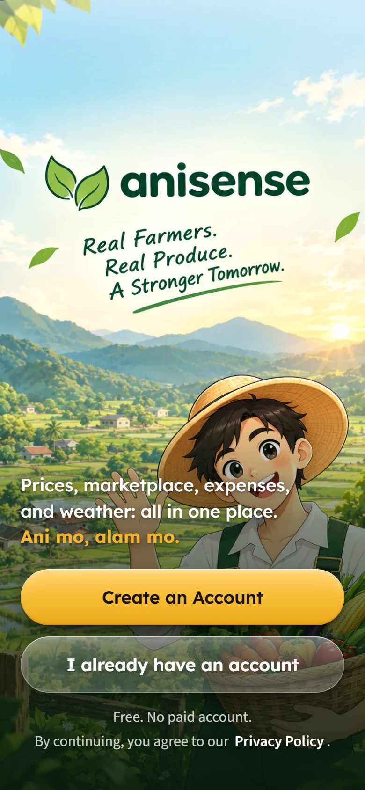

For Nueva Ecija farmers and the buyers they sell to
Know the price before you sell.
AniSense shows this month's crop prices, what the next three months may bring, and lets you sell straight to buyers. Free, in English and Tagalog, and it works even when the signal drops.
- Free
- English and Tagalog
- Works offline

September 2026 retail prices · Nueva Ecija
crop varieties, from rice to watermelon
monthly price records, back to 2021
of forecast, by ARIMA and LSTM
to use. No paid account, no ads.
Prices
Prices you can plan around
Monthly retail prices for Nueva Ecija, the newest first, with the crops you grow at the top.
See every move. Each price says how far it went up or down from the month before.
Tap a crop for its year. A chart of this year's prices, the low and the high, and where it may go next.
Name your price. Set a price alert, and AniSense tells you when a crop reaches it.

Forecasts
Forecasts that say how sure they are
Two models, ARIMA and LSTM, learned from monthly prices since 2021 and were tested on the last twelve months. AniSense shows how far off they were, and gives sell-or-wait advice only when that is 20% or less.
How far off the forecast was in testing
Average miss of the ARIMA model, which gives the advice. No model can see a sudden shock, like a typhoon or an import ban coming: a forecast is a guide, not a promise.

Market
Sell straight to the people who buy
Farmers post what they have. Buyers find it, order it, and call the farmer.
If you farm
- Post a harvest with a photo, the kilos and your price.
- See your price beside the market's.
- Buyers call you directly.
If you buy
- Browse fresh produce from Nueva Ecija farms.
- Order from several farmers in one checkout.
- Know who grew it, and where.


Farm records
Your farm's books, even without signal
Write down what each crop costs and what it sold for. AniSense works out what is left over.
Expenses by crop. Seeds, fertilizer, labor and more, month by month.
Profit, before and after. What your harvest is worth at today's price, and what it really sold for.
Saved on the phone first. No signal in the field? It is sent the moment you are back online.
Yours alone. Only you can see your farm records.

Made for the field
Built for the people who use it
Farmers in Nueva Ecija, many of them past fifty, on the phones they already have.
Easy to read
Large text and large buttons, one question at a time.
English and Tagalog
Switch any time, from the very first screen.
Works offline
Prices, their history and the forecasts are inside the app.
Private by default
No ads, and we never sell your information.
How it works
Up and running in three steps
- 1
Create an account
With your CP number or Gmail. Choose farmer or buyer.

- 2
Check the prices
This month's prices, and the next three months, crop by crop.
- 3
Sell or buy
Post your harvest, or order fresh from a farmer.
Questions
Good to know
Ani mo, alam mo.
AniSense is coming to Google Play
Free for farmers and buyers, on Android phones. This page will link to it the day it is out.
Questions? Write to AniSense2026@gmail.com